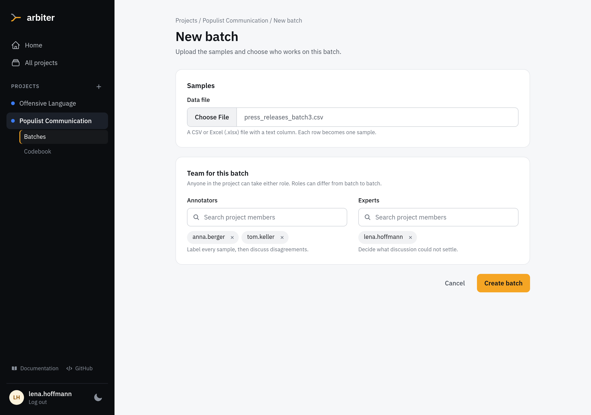
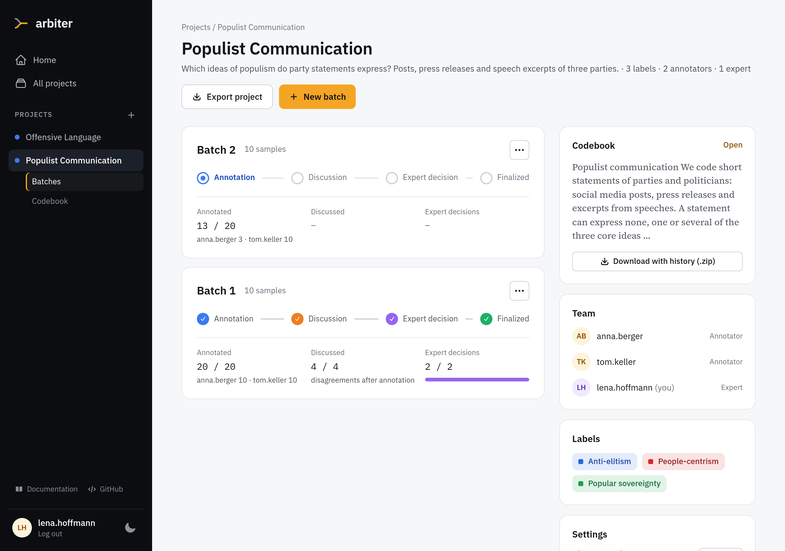
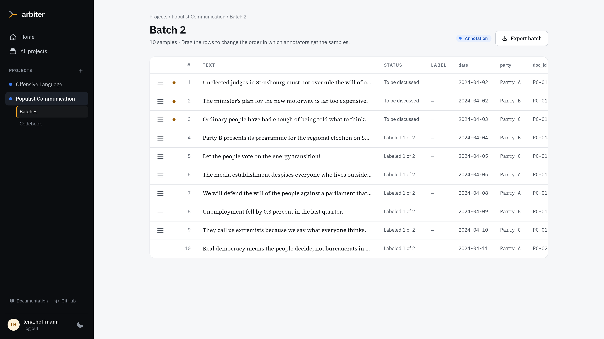

Upload data
The texts of a project come in batches. Each batch goes through annotation, discussion and expert decision on its own (see How Arbiter works), and the codebook can improve between one batch and the next. Smaller batches give you that chance more often.
Prepare the file
Upload a CSV or Excel (.xlsx) file with one text per row. It needs a column named text; every other column is kept with the text, for example an id, the source or a date:
doc_id |
party |
date |
text |
|---|---|---|---|
PC-021 |
Party A |
2024-04-02 |
The elites in Brussels decide over our heads. |
PC-022 |
Party B |
2024-04-03 |
Our new rail plan connects every town by 2030. |
Keep an id column: the exports contain all columns again, so you can join the labels back to your data.
Put each piece of information in its own column. Annotators and experts see them below the text only if Show metadata is switched on in the project’s settings.
Every row needs a text. A file with empty texts is rejected, with the rows named.
Saving a CSV from pandas, use
df.to_csv(..., index=False). Otherwise the row numbers end up as an extra columnUnnamed: 0.
The texts are taken exactly as they are in the file: a text “007” stays “007”, a text “NA” stays “NA”.
Upload a batch
On the project page, click New batch.
Choose the file under Data file.
Under Team for this batch, choose who annotates and who decides. Everyone in the project is preselected in the role they have in the project; you can leave people out or give someone the other role for this batch, but nobody can have both.
Click Create batch.


A new batch for the project on populist communication.
The batch starts right away: it gets the next number, the codebook as it is now becomes its starting version, and the annotators find it on their home page. They annotate the texts in the order of the file.
Follow a batch
The project page shows a card for every batch, the newest first. It shows the phase the batch is in and how far it got: how many texts each annotator has labeled, how many disagreements have been discussed and how many the experts have decided.


The project page: batch 2 is being annotated, batch 1 is finished.
A batch moves from one phase to the next by itself: when the last annotator finalizes, when the discussion has gone through every disagreement, when the experts have decided every text that is left. You do not have to do anything in between, other than deciding as an expert.
The menu ⋯ on the card holds everything else:
View samples lists the texts of the batch with their state, such as Labeled 1 of 2 or To be discussed, and, where it is settled, their label. A dot marks the texts the annotators labeled differently. Before the discussion starts, you can drag the rows to change the order in which annotators get the texts.
Export batch downloads the batch, see Export.
Codebook changes shows what changed in the codebook before the batch started.
Move to phase moves the batch to another phase by hand. Use it when a batch is stuck, for example because an annotator can no longer take part. If work is still open, Arbiter tells you what and asks before it moves on. Nothing anyone has entered is deleted: moved back to annotation, everyone has to finalize again, with their labels kept.
Delete batch deletes the batch with all its texts, annotations, discussions and decisions. Changes to the codebook stay. Export the batch first if you want to keep anything.


View samples: the texts of batch 2 with their state.